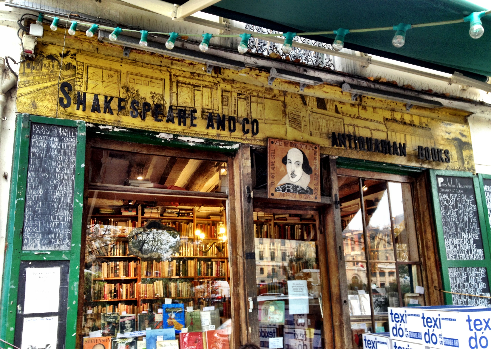

Buchhandlung Shakespeare
Dieses Haus ist ein reges und anspruchsvolles Zentrum für moderne Kunst, dessen Aktivitäten jedoch selten ähnliches Aufsehen erregen wie die des Centre Pompidou. Gleichwohl genießen die zahlreichen Veranstaltungen des ARC und die damit verbundenen Publikationen sehr hohes Ansehen. Das kurz MAM genannte Städtische Museum für Moderne Kunst verdient Beachtung für sein Ausstellungsprogramm, das sich nicht nur für die großen Namen interessiert, sondern auch unbekanntere Meister der Moderne präsentiert.
1961 wurde das Museum im Ostflügel des Palais de Tokyo eröffnet, einem antikisierend-monumentalen Relikt der Weltausstellung von 1937. Neu zur Zeit der Erbauung waren die zenitale Beleuchtung der kahlweißen Säle und die relative Mobilität der räumlichen Einteilung. Einen großen Teil seines Reichtums verdankt das Museum den Schenkungen von Künstlern und Kunstsammlern.
An privilegierter Stelle findet man La Danse von Henri Matisse (1932), in seiner ersten Version schon das Resultat einer langen Folge von Bildentwürfen, und La Fée Electricité von Raoul Dufy. Die riesige, aus 250 Teilen bestehende Komposition (60 m breit) bildete das Dekor des Pavillons der Elektrizität auf der Weltausstellung von 1937. Vom mythischen Blitz des Zeus bis zur modernen Stromzentrale wird die Geschichte der Elektrizität erzählt - ein recht schulisches Thema, das Dufy mit spielerischer Fantasie meisterte.
Die Fauves sorgten mit ihren kühnen Farbkontrasten beim Salon d'Automne 1905 für einen Skandal. Mit seinen gelben Körpern auf flächig grünem Grund und starken Schlagschatten ein bezeichnendes Werk der Bewegung ist Trois personnages assis sur l'herbe (1906) von André Derain, La Pastorale (1905) von Henri Matisse fiel 2010 leider einem Kunstraub zum Opfer. Der Kubismus ist mit einigen Gemälden seiner Initiatoren Pablo Picasso (Café, 1911) und Georges Braque (Tête de Femme, 1909) vertreten und mit Werken von Künstlern aus ihrem Umkreis. Tsuguharu Foujita, Modigliani und Jules Pascin zählten zur großen Gruppe von Künstlern aus aller Welt, die Anfang des 19. Jh. in Paris arbeitete. Obgleich ihre Werke keiner gemeinsamen Stilrichtung angehörten, zählte man sie zur École de Paris.
Fernand Légers modernistische Sicht wird im Gemälde Les Disques (1918) evident. Daneben zeigt sich Dada respektlos und witzig, mit Werken von Jean Crotti und Francis Picabia. Interessant sind auch die surrealistischen Schimären von Victor Brauner. Einen Sonderplatz in diesem Panorama der Kunst zwischen den beiden Weltkriegen nimmt Émile Bonnard ein. Er ist mit drei bewundernswerten Bildern vertreten, darunter sein Nu dans le Bain. Ein anderer Künstler abseits der Avantgarde ist Édouard Vuillard, dessen große >Maquettes< in freier Technik das Thema des Künstlers im Atelier behandeln. Raoul Dufy ist noch einmal vertreten mit einigen für sein >fa presto< der 1930er-Jahre typischen Bildern. Rythmes (1938), die großen farbenfrohen Kompositionen von Sonia und Robert Delaunay wiederum erkunden die Dynamik kreisender Formen.
Die Tendenzen der Kunst nach 1945 illustrieren Werke von Pierre Soulages und Hartung, die für die lyrische Abstraktion stehen, die Neuen Realisten wie Raimond Hains, Yves Klein und seine Vénus Bleue (1962), auch Arte Povera und Support/Surface sind vertreten. Beeindruckend ist die Installation von Christian Boltanski, Réserve du Musée des Enfants (1989), ein penibles Inventar aus Objekten und Fotos.


{kind=link}